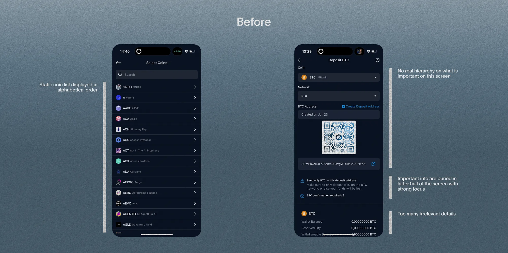
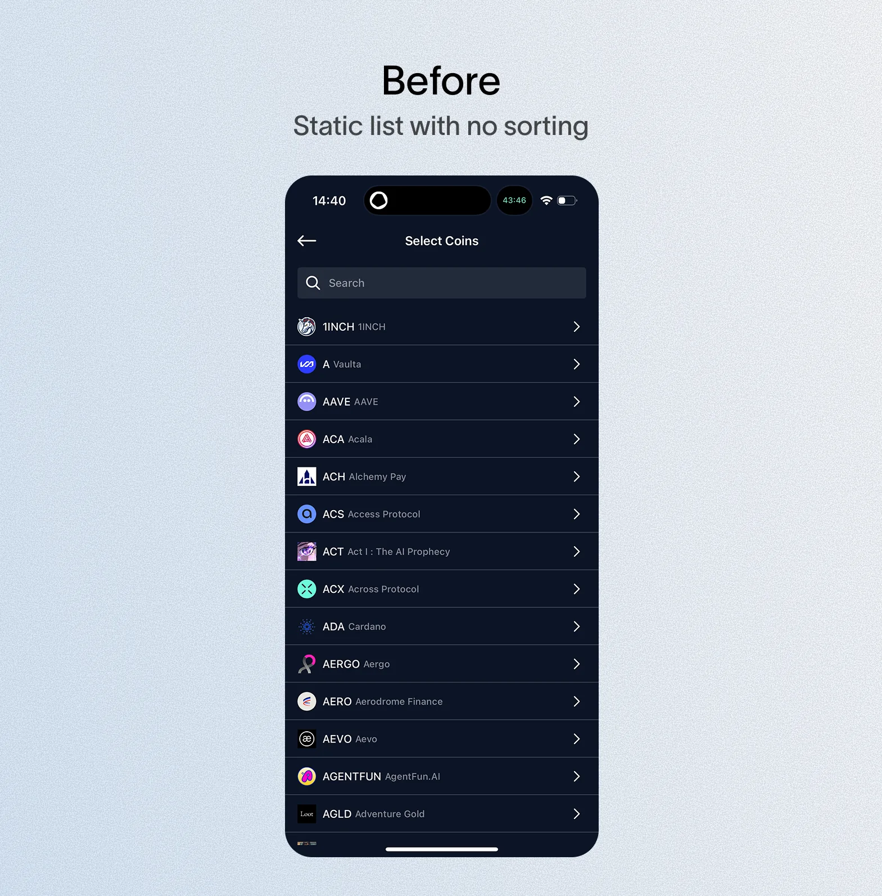
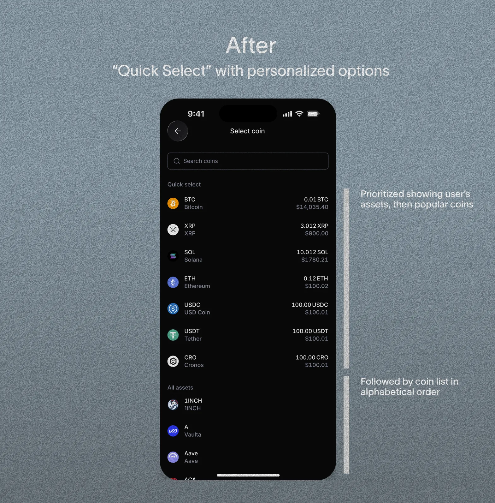
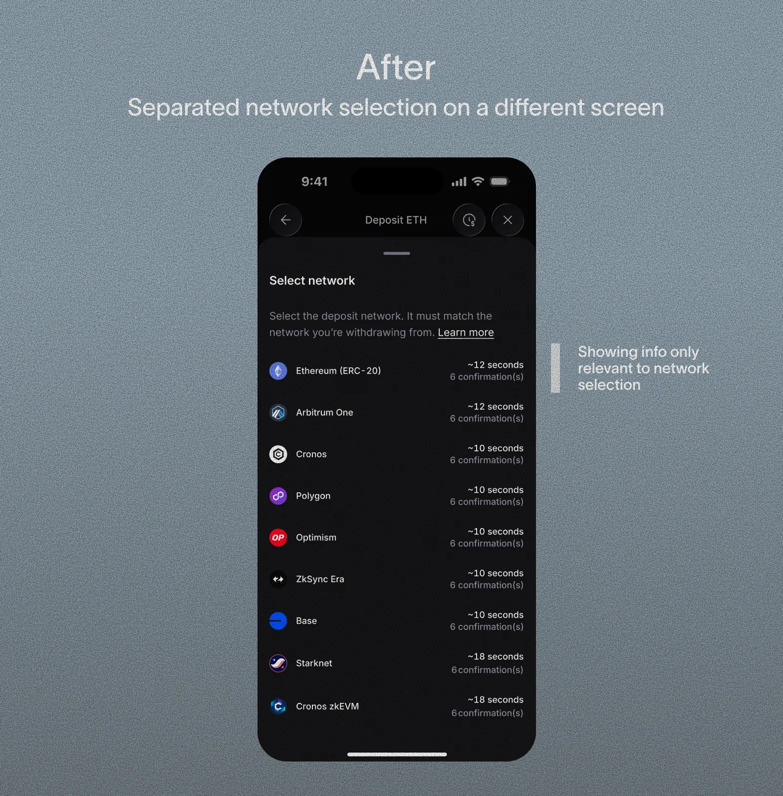
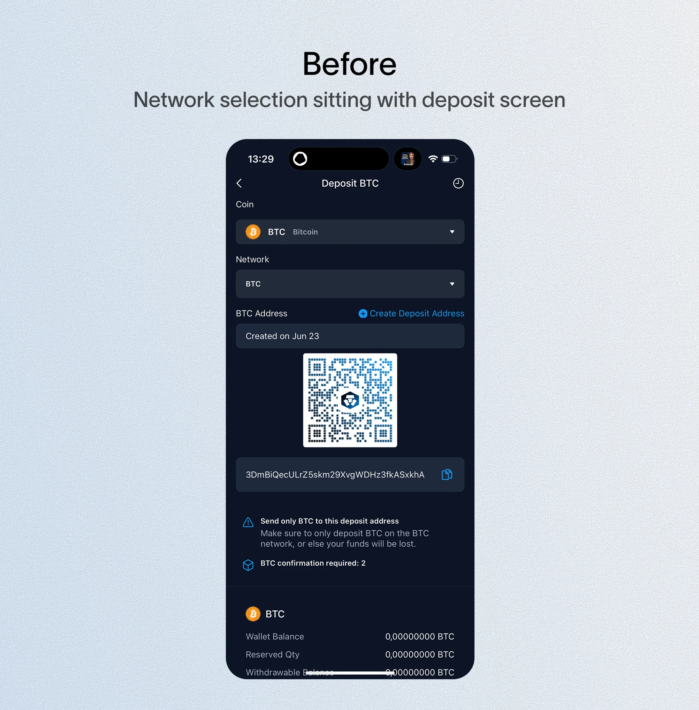
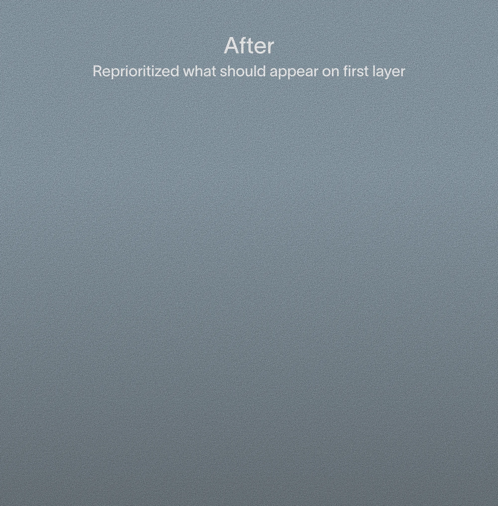

The crypto deposit flow was one of the most critical — and most friction-heavy — parts of the app, and a legacy flow that hadn't been improved since 2021. At the same time, the team was rebuilding the design system, and deposit became the first flow to be redesigned under it, given the time and effort available. I wasn't involved in building the new design system itself, but I worked in parallel to migrate it into the deposit flow redesign as I went, given the limited timeline.
Deposit sits directly on the critical path. A user cannot place their first trade without depositing funds first, making it one of the highest-leverage flows to get right.
How might we simplify the crypto deposit flow so that both new and experienced traders can complete their first deposit with confidence?
Metrics were limited at the company, so I relied heavily on competitive analysis, current UX patterns, and heuristics rather than quantitative data to drive this redesign.
From a design audit of our existing flow — compared against current industry standards and competitor patterns — I identified three main issues.
The deposit information screen had become a dense wall of detail, mixing essential information with content users didn't need. For experienced traders it was manageable. For newer crypto users, it created immediate hesitation.

Every user saw the same undifferentiated list regardless of their existing holdings, so I introduced a "Quick Select" section that surfaces personalized options first.


This step lived bundled with coin selection — a technical decision folded into a simple one, and not even applicable to every token — so I split it into its own dedicated step.
Stakeholders and engineering assumed fewer screens meant faster, simpler completion. I argued the bundling, not the screen count, was the real source of hesitation — backed by benchmarking against Binance, Kraken, OKX, and Coinbase, all of which isolate this step.
This follows Miller's Law: breaking a complex decision into smaller steps reduces cognitive load, even at the cost of an extra screen. Making the step conditional — shown only when a token required it — meant the added structure never penalized the simpler, more common case.

Too much low-priority information surfaced on first landing, so I re-prioritized what actually appeared on that first layer.


Crypto deposit metrics weren't accessible, so this can't be backed by a completion-rate or conversion number. What I do have: the redesigned flow was well received by both stakeholders and users.